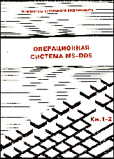

|  | Операционная система MS-DOS© Александр Фролов, Григорий ФроловТом 1, книги 1-2, М.: Диалог-МИФИ, 1991, 239 стр. |
Оригинальное учебно-справочное руководство по системному программированию в операционной системе MS-DOS на компьютерах IBM PC. От аналогичных изданий отличается более глубоким изложением материала. Описываются детали, которые часто остаются скрытыми даже для опытного программиста: внутренняя структура и организация работы MS-DOS, недокументированные прерывания. Разбираются профессиональные приемы работы. Приводится большое количество подробно комментируемых исходных текстов программ. Для системных программистов, аспирантов, студентов вузов.